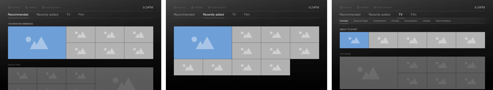
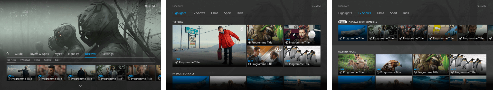
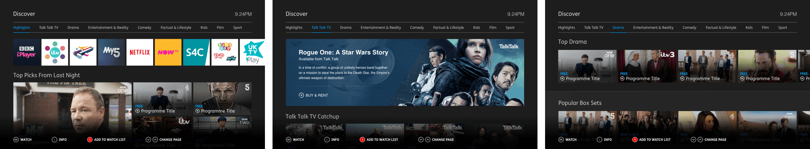

A core feature of the YouView experience is the ability to access content from across a wide range of television and film content providers and applications. To leverage this, we developed a user facing discovery feature, allowing users to easily find content regardless of where it was coming from.
The project kicked off with a series of brainstorm sessions where initial ideas were conceived, with a focus on how users may navigate through different types of content. Data from our existing features was used to inform what content should be surfaced and where in the journey users tend to engage with it.
From these wireframes, low fidelity click-through prototypes were tested in-house.
Following cycles of testing and refining, higher fidelity wireframes were designed from which interactive prototypes were produced, using Framer. This then allowed more precise user research sessions to take place.
 An example of one of the Framer prototypes created. This one was used to demonstrate how sub genre navigation may work and also includes concept work for displaying movie trailers within the browsing experience.
This prototype was used to demonstrate a simplified shallow navigation structure, while mixing live television and on-demand content into a solitary experience.